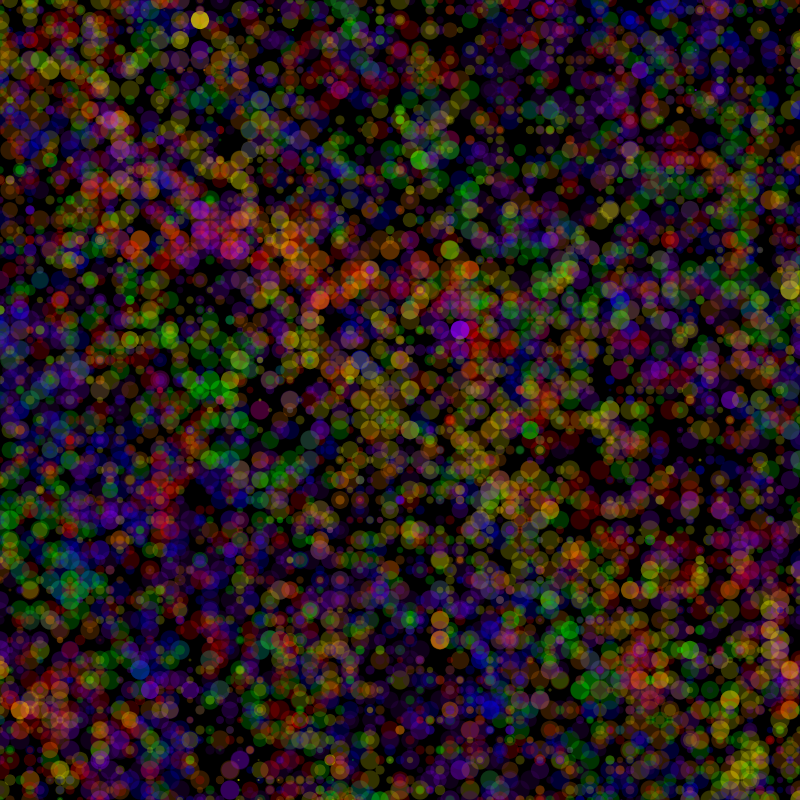

Using step functions, random() and directional bias to influence the path of an ellipse, or "walker".
Arrays containing a varied amount of 0's, 1's, and -1's were used to alter the probablity of a step in a given direction X and Y.
Output Images
PlaceholderIteration 1 - Three walkers, same start point, each a different directional bias
PlaceholderIteration 2 - Seven walkers, variation in size depending on user interaction
Placeholder

Iteration 3 - "Light Spot" Effect, variation in size and fill opacity
PlaceholderIteration 4 - Interpolated colour, directional bias to the right